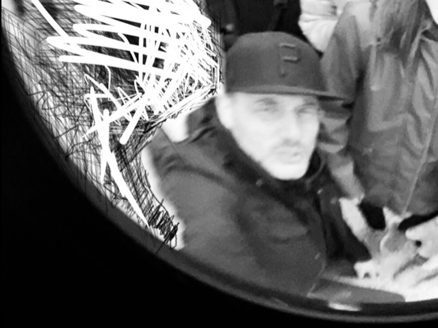
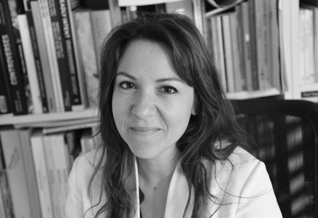
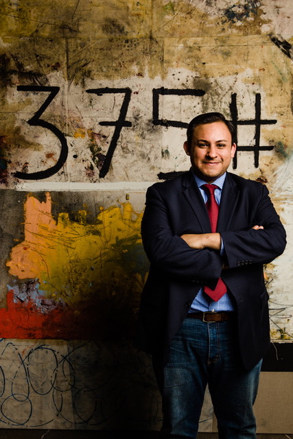
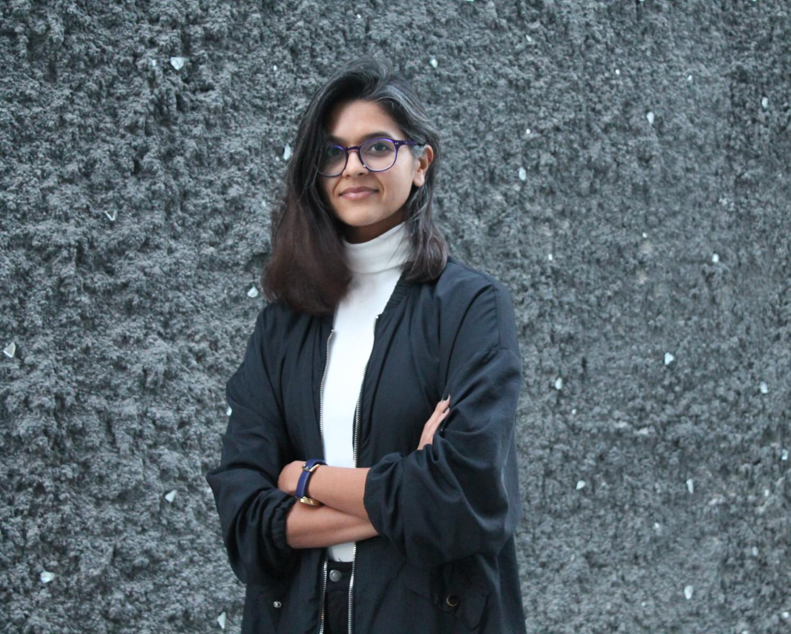
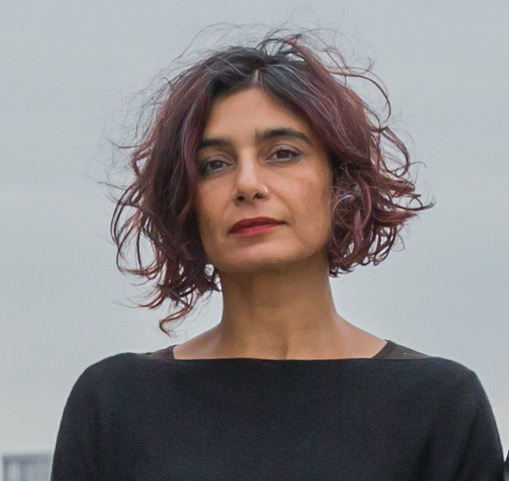
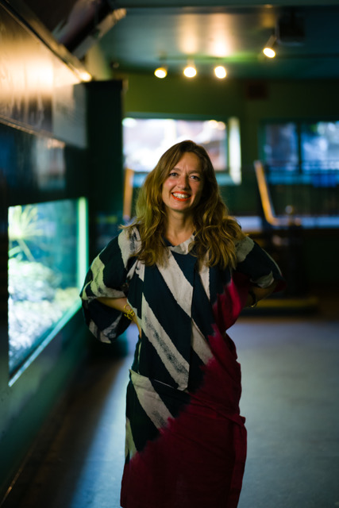
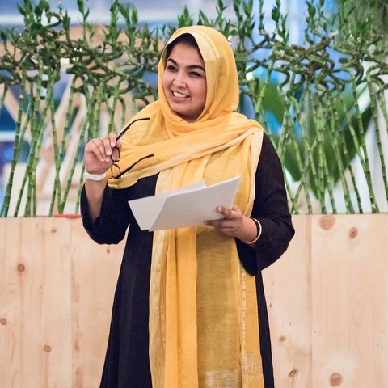
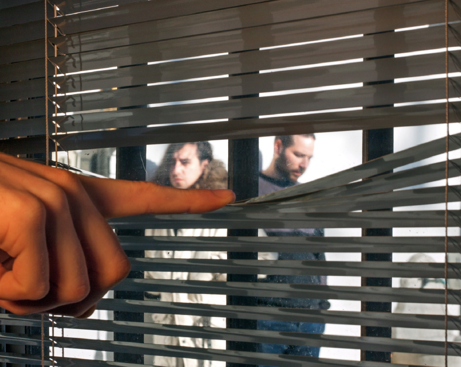
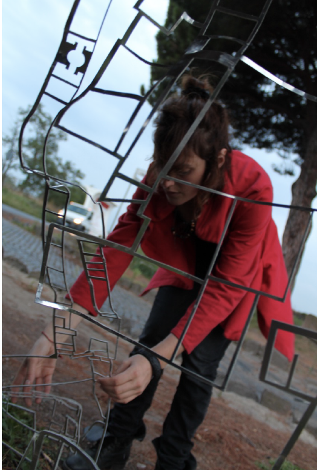

Residencies
Alserkal Residency was created as a platform for artistic and discursive exchange, seeking to support cultural practitioners as they realise projects pertinent to their respective practices. The programme is designed to be immersive and engage the local interdisciplinary community through a series of public events and conversations. Founded by Abdelmonem Bin Eisa Alserkal and the Alserkal family, the Residency focuses on research-based and socially-engaged practices.
Split into three cycles – Spring, Summer and Fall – via a combination of open calls and solicited proposals, Alserkal Residency is open to emerging and mid-career artists, as well as curators, architects, writers, and researchers working in related fields.
The primary focus of the Residency is to foster an exploration of ideas. Residents are expected to contribute towards creating a dynamic public programme that engages local and regional audiences.
Based in a 6,000 sq. foot warehouse space located in the heart of Alserkal Avenue the residency was designed by UAE-based architectural collective ‘a hypothetical office’, and can accommodate up to six residents per cycle.
RESIDENCY RESOURCES
ROUND-TRIP TRANSPORTATION, ACCOMMODATION, MONTHLY STIPEND:
The Residency provides economy return flights from the resident’s home city to Dubai.
Residents receive a stipend towards their living expenses.
PROGRAMMING STIPEND
Development and delivery of a public event is the major requirement for all residency participants. Residents are encouraged to interact with the Alserkal Avenue community, and the wider UAE public through the event they create.
Residents will have access to a stipend to be used towards the realisation of the public event. The event could include performances, talks, workshops, screenings, lectures, panels and seminars or other formats.
Residents are asked to participate in one Open Studio session.
RESEARCH STIPEND
During the residency, exploration with process and research is also encouraged – to that end, each resident will have access to a research stipend which can be used towards the development of their personal research.
In their final week, residents will be asked to present the ‘results’ of their time in residence to the Director, and their fellow residents.
STUDIO VISITS / CRITIQUES / EXCURSIONS
The Residency will give participants access to creative resources and networks in Dubai through studio visits, critiques, and gatherings.
Residents will be taken on excursions to explore Dubai and the surrounding Emirates, and are encouraged to immerse themselves in the city.

Pierre Bélanger
Pierre Bélanger is a landscape architect and urban planner. Founder of OPSYS and LANDSCAPE INFRASTRUCTURE LAB, Bélanger has published several books and edited publications including LANDSCAPE AS INFRASTRUCTURE, ECOLOGIES OF POWER, GOING LIVE, RISK ECOLOGIES, WET MATTER, EXTRACTION EMPIRE. Collaborative public works projects and cartographic initiatives include the Zakim Bridge Underpass Skatepark in Boston for the Massachusetts Department of Conservation (US), the Ontario Food Terminal in Toronto for the Ministry of Agriculture and Transportation (Canada), YVR International Airport Expansion for the Greater Vancouver Airport Authority (Canada), the Disaster Evacuation Park System in the Artibonite Valley for the Department of Civil Protection (Haiti), and the 2016 Canadian Pavilion at the 15th Venice Architecture Biennale (Italy).

iLiana Fokianaki
iLiana Fokianaki is a writer and curator based in Athens and Rotterdam. Her recent research focuses on formations of power that manifest under the influence of geopolitics, national identity, and cultural and anthropological histories. In 2013 she founded State of Concept Athens, the first non-profit institution in Athens. In 2016, with Antonia Alampi, she founded Future Climates. She lectures at the Dutch Art Institute, and at various independent spaces, museums, and foundations worldwide. She publishes in art-agenda, Art Papers, e-flux, Frieze, LEAP, Metropolis M, and Ocula. She is curator and programmer for Kunsthal Extra City, Antwerp (2017-2019) and a member of IKT, the International Association of Curators of Contemporary Art.

César García-Alvarez
César García-Alvarez is the Founding Executive and Artistic Director of The Mistake Room (TMR) — LA’s international non-profit contemporary art space. Prior to founding TMR he served as Associate Director & Senior Curator of LAXART (2007-2012), as one of the curators of the Hammer Museum’s Made in L.A. 2012, and as U.S. Commissioner for the 13th International Cairo Biennial. He has held various teaching appointments and publishes frequently. His academic research interests include Spatial Studies; History and Theory of Museological, Exhibitionary, and Curatorial Practices; Intellectual Histories of the Global South; and Disciplinary Formations. He lives and works between Los Angeles, CA and Guadalajara, Mexico.

Raja’a Khalid
Raja’a Khalid is an artist from Dubai. Her practice is concerned with the Arabian Gulf region and its contemporary narratives of class, commodity circulation and consumer culture. Her current work aims to look at the Gulf’s own streaming motifs of masculinity, male initiation, game, discipline, athleticism, sport, adornment, fetish, desire, conspicuous production and crypto-secularity. Selected exhibitions include Crude at Jameel Arts Centre, Dubai, ANTI - 6th Athens Biennale, Athens, Art Athina, Athens, ARCOmadrid (with Grey Noise) Madrid, FASTEST WITH THE MOSTEST, Tashkeel, Dubai, Change Your Life, Alserkal Avenue, Dubai, SOLAR FLARE, ALWAYS RED, Grey Noise, Dubai, Sylvain Baumann, Justin Eagle, Raja’a Khalid, VITRINE, Basel. She received her MFA from Cornell University in 2013. From 2013 to 2015, Raja'a was a contributing editor to independent publishing platform THE STATE (Dubai) and is currently a contributor to ZIGG, a Dubai-based collaborative publication founded by writer and editor Ahmad Makia. She currently serves as Alserkal Residency Manager.

Monica Narula
Monica Narula is a member of Raqs Media Collective, which she formed in 1992 with Jeebesh Bagchi and Shuddhabrata Sengupta. The word ‘raqs’ in several languages denotes an intensification of awareness and presence attained by whirling, turning, being in a state of revolution. Raqs Media Collective takes this sense of ‘kinetic contemplation’ and a restless and energetic entanglement with the world and with time. Raqs practices across several forms and media; it makes art, produces performances, writes, curates exhibitions, and occupies a unique position at the intersection of contemporary art, philosophical speculation and historical enquiry. The members of Raqs Media Collective live and work in New Delhi, India.

Filipa Ramos
Lisbon-born Filipa Ramos is a writer and editor based in London, where she works as Editor in Chief of art agenda. She is a Lecturer in the Experimental Film MA programme of Kingston University and in the MRes Art:Moving Image of Central Saint Martins, both in London, and collaborates with the Master Programme of the Institut Kunst, Basel. Ramos is co-founder and co-curator of Vdrome, a programme of screenings of films by visual artists and filmmakers.
In the past, she was Associate Editor of Manifesta Journal and contributed to Documenta 13 (2012) and 14 (2017). Her writing and research, largely focused on interspecies relationships, has been published in magazines and catalogues worldwide. She co-authored Lost & Found—Crisis of Memory in Contemporary Art (Milan: Silvana Editoriale, 2009), and edited Animals (London: Whitechapel Gallery/MIT Press, 2016). She is currently preparing a large group exhibition on becoming animal-becoming other at the Bildmuseet Umeå, Sweden (Summer 2019).

Uzma Z. Rizvi
Uzma Z. Rizvi is Associate Professor of Anthropology and Urban Studies at the Pratt Institute, Brooklyn, NY, and a Visiting Researcher at the American University of Sharjah, UAE. Rizvi served on the inaugural Alserkal Residency selection committee (2016-2018), has directed (with Amal Khalaf) Global Art Forum-10 (2016), and has been a lead tutor (with Murtaza Vali) for Campus Art Dubai (CAD) since 2014. Her research interests include decolonising archaeology, ancient urbanism, critical heritage studies, new materialism, and the postcolonial critique. She has intentionally interwoven archaeology with cultural criticism, philosophy, critical theory, art and design. Rizvi has published five books, numerous journal articles and essays including work in The New Inquiry, E-Flux, TANK, LEAP, and Anthrodendum among others.
Founding Selection Committee:
Amanda Abi Khalil
Diana Campbell Betancourt
Luigi Fassi
Vassilis Oikonomopoulos
Uzma Z. Rizvi
Aquamarina Adonopoulou
SELECTION PROCESS
For Spring and Fall cycles, the Residency Director and Selection Committee will nominate artists and cultural practitioners to apply. The Selection Committee consists of leading international scholars, curators and writers. For Summer cycles, applications are accepted via an Open Call which is released on Alserkal Avenue social media channels. Shortlisted applicants for all three cycles will be interviewed by the Residency Director before final places are afforded.
APPLICATION REQUIREMENTS
All applicants are required to present the following materials as part of their application in a single PDF. Incomplete applications will not be considered.
- Full CV with complete contact information (full name, phone contact, email address, Skype ID and personal website URL if applicable)
- A statement of intent, of approximately 500 words, that includes a description of what the artist / cultural practitioner would like to present for their public programme. The statement should also mention if there are any specific media or studio requirements.
- Portfolio (the portfolio will not take the place of the statement of intent).
- Up to 15 images no larger than 1MB. An image list should be included containing the title, date, size and materials.
- If images are not possible due to the nature of the applicant’s work, we also accept up to two video/audio files that support the application (no more than five minutes in duration each, and no larger than 2GB)
- ‘Professional or Artist Statement’ of no more that 250 words.
- Curators / Writers / Researchers should include a minimum of two writing samples of 500 words each.
The Residency provides:
- Return flights from the resident’s home city to Dubai
- Monthly living stipend
- Production stipend
- Programming stipend
- 24-hour access to an individual studio at Alserkal Avenue
- Support from Alserkal Residency team
- Introductions, mentorship and critiques from international and local professionals, who are part of Alserkal Avenue’s network of peers
RESIDENCY CYCLE DATES
Spring 2019: 1 February 2019 - 1 April 2019 (internally nominated)
Summer 2019: 9 June 2019 - 8 August 2019 (open call deadline 1 January 2019)
Fall 2019: 1 October 2019 - 1 December 2019 (internally nominated)
Spring 2020: 1 February 2020 - 1 April 2020 (internally nominated)
Summer 2020: 1 June 2020 - 1 August 2020 (open call deadline 15 January 2020)
Fall 2020: 1 October 2020 - 1 December 2020 (internally nominated)
CURRENT RESIDENTS

Invernomuto
Simone Bertuzzi (b. 1983) and Simone Trabucchi (b. 1982) have been collaborating as Invernomuto since 2003. Although their work focuses primarily on the moving image and sound, they also integrate sculpture, performance, and publishing into their practice. Invernomuto explore what remain of sub-cultures by moving through different media. Observed through unashamedly affected eyes, oral cultures, and minor histories are laid open, their vernacular forms examined. Inauthentic materials play a fundamental role within this process, emphasising the fictitious realities that inspire them. Bertuzzi and Trabucchi have developed individual lines of research into sound with the outlets Palm Wine and STILL, respectively. Currently they are developing the project Black Med, initiated for Manifesta 12 (Palermo), which is part of the performance programme at the 58th International Art Exhibition - La Biennale di Venezia, curated by Ralph Rugoff. In 2019, they have held solo shows at Pinksummer, Genoa (April), Leto Gallery, Warsaw (April), NN Contemporary Art, Northampton (June) and Galleria Nazionale, Rome (October). In addition to their residency at Alserkal Arts Foundation, Invernomuto are fellows at the American Academy in Rome (Cy Twombly Italian Fellows in Visual Arts) in 2019. Their work has been shown at TATE (London), Manifesta 12 (Palermo), Villa Medici (Rome), Kunsthalle Wien (Vienna), Nuit Blanche 2017 (Paris), MAXXI (Rome), Museion (Bozen), Unsound (Krakow), Bozar (Brussels), Centre d’Art Contemporain (Geneve), Istituto Italiano di Cultura (Addis Ababa), PAC (Milan), Fondation Ricard (Paris), Centre Pompidou (Paris), Fondazione Sandretto (Turin), Hangar Bicocca (Milan), Netmage 07/09 (Bologna), Biennale Architettura 11 (Venice), and in many other international institutions. Invernomuto is represented by Pinksummer gallery, Genoa.

Michela de Mattei
Michela de Mattei, born in 1984 in Rome, Italy, studied Philosophy at Universita di Roma la Sapienza, and was the assistant to artist, Giuseppe Gallo. Through her practice, which spans drawings, sculpture, installation, and video, she creates fictional scenarios to explore the relationship between humans and nature. Recent solo exhibitions include: Blushing, Belmacz (2019), Estée Lauder series (curated by Lavinia Filippi), Italian Cultural Institute, London (2018), Vogliatemi perdonare quel poco di disturbo che reco, Ex Elettrofonica, Rome (2014); Innesto #6, Orientamento | Michela de Mattei, Sala Santa Rita, Rome (2013). Recent group exhibitions include Hypermaremma ( Chapter II ), Antica Città di Cosa, Ansedonia (2019); The H.P Collection, Operativa Arte Contemporanea, Rome; Machine Gun Etiquette, Belmacz, London; Straperetana, il tempo svogliato (Idle Time), Pereto; The Shape of a Circle in the Mind of a Fish, Part 1: Language, curated by Filipa Ramos and Lucia Pietroiusti, Serpentines Galleries / ZSL London Zoo 2018, Collettiva 5 + 5, Galerie Italienne, Paris (2018), Rosina#1 – Spectrum, Limone Space, London; La Vita Della Mente, Istituto Svizzero di Roma, Rome; Bodikon, Belmacz, London (2017); There is no place like home 4°, Riverside dock, Rome;InterKontinental, Belmacz, London (2016); La Pelle, Project by FONDACO, Officina, Brussels (2016); Rétrospective I: Fail Compilation, Détail, Paris (2016); Feets, Don’t Fail Me Now, Belmacz, London (2015); Incidents of phenomena, Spazio Cerere, Rome; Appartate, (2 person show- Michela de Mattei and Aldo Grazzi), and Smart Polo per l’arte contemporanea, Rome (2014). De Mattei lives and works in London.
PAST RESIDENTS
METASITU
METASITU is a research-based and socially-driven practice, pendulating between Kiev and Athens. They usurp artistic roles (artists, curators, coordinators), using art as a strategy: a platform to support their research, a medium to reach different actors, and a tool to establish bridges across disciplines. This allows them to abuse urbanism discourses, develop new tools to empower individuals in the way they relate to the territory, and challenge spatial power hegemonies. Founded in 2014 by Liva Dudareva and Eduardo Cassina, METASITU was born with the goal of enabling cognitive emancipations around the (built) environment, by establishing new formats of knowledge exchange for understanding the urban condition today, for an exciting tomorrow. At METASITU they strive to open up new discursive lines, and demystify prevalent spatial narratives, by curating urbanism festivals, delivering workshops, producing videos, coordinating residencies, developing public programs, tutoring students, self-publishing, and transgressing real estate commodities. For the past three years they have been researching alternatives to traditional master planning techniques for post-industrial shrinking cities. Top-down initiatives such as Detroit’s ‘smart decline’ have proven to be extremely violent and unsuccessful. They believe in creating a horizontal framework for knowledge exchange in order to subsume degrowth in their masterplans.
Mahan Moalemi
Mahan Moalemi is a writer and curator. His research explores possible encounters between global visual cultures and critical future studies, with particular interests in chronopolitics, nonhuman temporalities, and techno-aesthetics. He was previously part of the team of organizers at kaf, an informal project space in Tehran (2011–2015). A recipient of the MOP Scholarship (2016), he holds a Master of Research in Curatorial/Knowledge from Goldsmiths, University of London (2017), where he co-curated The Fisher-Function, a journey from collective mourning to collaborative publishing and public programming. He is co-editor of Ethnofuturismen (Merve Verlag, 2018) and his writings have appeared in Cabinet, Domus, Spike Art Quarterly, and a number of art and literary publications in Iran.
Željka Blakšić
Željka Blakšić AKA Gita Blak born in Zagreb, Croatia (ex- Yugoslavia) is an interdisciplinary artist who currently lives and works in New York City (US). She studied at the Academy of Fine Arts in Zagreb where she recieved her BFA. In 2010 Blakšić received her Master of Fine Arts with Distinction from the School of Visual Arts in New York City. Recent exhibitions include, “Performing Words, Uttering Performance” curated by TOK and Inga Lāce at Filmwerkstatt Düsseldorf; “The Witnessing Event” curated by Rashmi Viswanathan at Los Sures Museum in NY; “It Won’t Be Long Now, Comrades!” curated by Inga Lāce & Katia Krupennikova at Framer Framed in Amsterdam; “Claim Space” performance at Museum of Modern Art, NY; "BROUHAHA" project at Recess SoHo; “Preaching to the Choir” curated by Maayan Sheleff at Herzlyia Museum, Herzliya; “Interpreting the Frame” curated by Boshko Boskovic at Gallery Augusta, Helsinki and many others. She was a recipient of the Residency Unlimited & National Endowment for the Arts Award 2017, Session Residency and Via Art Fund Grant 2016; 2014/15 AIR Gallery Fellowship in New York, The District Kunst und Kulturförderung Studio Award in Berlin; Paula Rhodes Memorial Award in New York City etc. Most recently she was a resident at Fondazione Pistoletto in Biella, Italy; and MuseumsQuartier in Vienna, Austria.
Lama Altakruri
Lama Altakruri, (b.1982 Abu Dhabi), is a Palestinian artist based in Ramallah. Lama was raised in Bahrain before moving to Palestine in 1994. She holds an MFA degree in Art Theory and Practice from Northwestern University, and a BA in Contemporary Visual Art from the International Academy of Art-Palestine. She currently works as a researcher/ assistant curator of the upcoming exhibition at the Palestinian Museum. In her practice, Lama uses text, sculpture, performance, and public interventions to explore global neo-liberal bubbles and the moments of comfort, familiarity, and detachment found in non-places.
Yaminay Chaudhri
Born in Karachi, Pakistan, Yaminay Chaudhri has a degree in architecture from Cornell University and an MFA in combined media studio arts from SUNY Albany. In 2011, she established the Tentative Collective in Karachi. Since then, she has been making work in response to the city both collaboratively and individually, using digital media and socially engaged practice. Her collaborative and individual works have been shown in various museums, galleries and festivals internationally including the Centre Pompidou (Paris), Kunstraum Bethanien (Berlin), Gandhara Artspace (Karachi), Twelve Gates Arts (Philadelphia), Maraya Art Center (Sharjah), Syracuse International Film Festival, Digital Marrakech Festival, IAWRT Asian Women's Film Festival (New Delhi), Karachi Biennale, Rabat Architecture Biennial (forthcoming). She has presented her work widely, most recently at the 2018 March Meeting in Sharjah and Tate Karachi Seminar. She has also written for various international publications and taught at universities in the USA and Pakistan.
Mochu
Mochu is a video artist and film-maker. His works often combine art-historical material with elements from philosophy, horror fiction and techno-utopian narratives, realised through varying assemblages of text, video and animation. The most recent project enquires into the overlaps of cybernetic theory and psychedelic subcultures, prior to which he researched the practice of the Indian Modernist painter K.Ramanujam with a grant from India Foundation for the Arts. Mochu was a fellow at the Home Workspace Program at Ashkal Alwan Beirut in 2016 and his work has been exhibited at Sharjah Biennial 13, Transmediale BWPWAP Berlin, Kiran Nadar Museum of Art Delhi and Beirut Art Center. He is currently based in Delhi.
Mona Ayyash
Mona Ayyash is a Dubai-raised artist. She holds an MFA in Studio Arts from Concordia University in Montreal, Canada and recently took part in the Campus Art Dubai 5.0 Core Programme. Her art practice reflects the themes of memory, the everyday, and her interest in the relationship between belonging and place. Selected group exhibitions include Loaning Sister Cities at Casino Artspace in Hamilton, Ontario (2016), Collision 11 at Parisian Laundry in Montreal (2015), SIKKA Art Fair in Dubai (2012), Regarding Borders at Maraya Art Center in Sharjah (2010), Dubai Episode at The Third Line in Dubai (2010).
Civil Architecture
Civil Architecture is a cultural practice preoccupied with the making of buildings and books about them. CIVIL asks what it means to produce architecture in a decidedly un-civil time, presenting a new civic character for a global condition. Since its founding by Hamed Bukhamseen and Ali Ismail Karimi, the practice has attracted a strong following for their provocative works and their offer of an alternate future to a nascent Middle East.
Ali El-Darsa
Ali El-Darsa, born in Beirut, Lebanon, lives and works in Berlin. He holds a Master of Visual Studies from Daniels Faculty of Architecture, Landscape and Design at the University of Toronto and a Bachelor of Fine Arts in Intermedia/Cyberarts from Concordia University, Montréal. Recent solo exhibitions and performances include: Hellerau European Centre for the Arts Dresden (Germany) and Dazibao (Montréal), "Within (A Bataillean Study)," Ymuno Gallery (Montréal). Select screenings include: Kassel Documentary Film and Video Festival (Kassel); Brooklyn Film Festival (New York); Festival International du Cinéma Méditerranéen (Montpellier).
Suzy Halajian
Suzy Halajian is a curator and writer. Her work begins at the intersection of art and politics, treating image making as steeped in colonial pasts and modern surveillance states. She has recently curated exhibitions and programs at LACE, Hammer Museum, Human Resources LA, Los Angeles Contemporary Archive (all Los Angeles); Sursock Museum, Beirut; Tanya Bonakdar Gallery, New York; and UKS, Oslo. Halajian serves on the Programming Committee of Human Resources LA and is the Associate Curator at the Armory Center for the Arts. In 2017 she was granted a Creative Capital | Andy Warhol Foundation Arts Writers Grant, and in 2014 she received a Curatorial Research Fellowship from the Andy Warhol Foundation for the Visual Arts. Her writing has been published by ArtEast, BOMB, X-TRA, Ibraaz, among others.
Mandy Merzaban
Mandy Merzaban is an artist, writer and curator.
Laura Metzler
Laura Metzler is the curator at Maraya Art Centre in Sharjah. She received her BA from the University of Texas at Austin and her MA from the American University of Beirut having written her thesis on the influence of scientific research on the later works of Saloua Raouda Choucair. Her practice is particularly engaged in transregional dialogues and emerging art historiographies. Recent exhibitions include Timo Nasseri's All the Letters in All the Stars, From the Shelf to the Wall:Artistic research and resources from the Maraya Collection, Collectivity: Objects and associations in the UAE Art World, and Sadik Alfraji's Once Upon a Time: Hadiqat Al Umma (co-curated with Dr. Alexandra Macgilp).
Kosmas Nikolaou
Kosmas Nikolaou (b. 1984) lives and works in Athens, Greece. He studied Fine Arts and Architecture in Greece and Italy. In 2012 he co-founded 3 137, an independent artist run space in Athens, Greece. His practice deals with the function and power of architecture, memory and oral history. He has participated in many residencies in Greece, Germany, Itally, Malta, Poland, Russia, Serbia and Croatia. In 2017 he was participant of the Ideas City residency organized by the New Museum in New York. Recent solo show include: Sojourning, Athens, 2015,Instructed rituals, Cologne, 2016.
Franziska Pierwoss
Franziska Pierwoss (*1981 Tübingen, Germany) currently lives and works in Beirut and Berlin. She graduated from the Academy of Visual Arts in Leipzig, Germany. Pierwoss is a performance and installation artist, who also works as an organizer & initiator of various cultural projects. With a strong focus on durational performance and collaborative practices she develops site specific installations that create situations of personal and political engagement. She was awarded the Young Artist Prize by the Goethe Institute. Her work has been shown in Harburger Kunstverein; Kunstverein Leipzig; Beirut Art Center; MUAC (Mexico City) and recently as part of the 13th Sharjah Biennial in Beirut. She co-initiated the Kino Projekt, a temporary cinema screening amateur Super 8 films and artist's video works in cities including Beirut, Naples, and Minneapolis.
Jaret Vadera
Jaret Vadera is a transdisciplinary artist whose work explores how different social, technological, and cognitive processes shape and control the ways that we see the world around and within us. Vadera's paintings, prints, photographs, videos, and installations have been exhibited and screened internationally at venues such as the Queens Museum, MoMA, the Smithsonian Asian Pacific American Center, Asia Society, Aga Khan Museum, Bhau Daji Lad Museum, and the Maraya Art Centre. In parallel, Vadera has worked as a curator, programmer, and writer on projects that focus on art as a catalyst for social change. Vadera studied in the fine arts mobility program at The Cooper Union, received his undergraduate degree in fine art from the Ontario College of Art and Design University, and his M.F.A. in painting and printmaking from Yale University.
Michael John Whelan
Michael John Whelan was born in Dublin, Ireland. His work has been exhibited and screened internationally in institutions, galleries and project spaces, including solo exhibitions (selection) at Grey Noise, Dubai; Rua Red, Dublin; Kunstverein Bochum and Boetzelaer|Nispen, Amsterdam. Group exhibitions and screenings (selection) include Kunsthall Stavanger; Kunst Haus Wien, Vienna; Lismore Castle Arts, Ireland; Dortmund Kunstverein; Kiasma, Helsinki; Centre for Contemporary Art Ujazdowski Castle, Warsaw; Museum Bochum; Noorderlicht Gallery, Groningen; Temple Bar Gallery & Studios, Dublin. He received a BA in Fine Art from IADT-DL, Dublin in 2002 and an MA in Fine Art from Chelsea College of Art and Design (University of the Arts London) in 2004. He has had two books published: ‘The sun shone on the nothing new’, published by Grey Noise/Lismore Castle Arts and ‘Red Sky Morning’, published by Argobooks, Berlin. He is represented by Grey Noise, Dubai and has work is in a number of public and private collections.
2019
Past Events
29 July 2019 | Lecture-performance by Aarti Sunder
Summer Cycle resident Aarti Sunder explores how we look at an excess of feeling in the workplace and beyond. Her interest is in asking how much these feelings are particular to us as individuals and how much of them are being felt collectively. What it takes to be ‘functional’ – within professional spaces and beyond – and how we repeatedly find ingenious ways to keep our individual and collective neuroses out of working environments (‘too much feeling’ is not useful unless channelled as exchange value).
25 July 2019 | Isolated Houses
Alserkal resident Sashikanth Thavudoz's invited guests to join him on an excursion investigating the relationships between built environments and nature. Sashikanth translated his personal experiences in Dubai in this off-site visit and through the context of displacement, he used this excursion to explore the temporality of urban experiences.
24 July 2019 | سُنة الحياة (Norms of life)
Balqis Al Rashed presented two immersive evenings, a Henna and a Wedding Night performance. She describes the performances as: "This marriage is not uniting two people, it is the marriage of dualities, of the bitterness and sweetness of life, the balance of the masculine and the feminine, and the tragedy of death and the celebration of creation. It is simplifying the processes of life by experiencing wedding and funerary ceremonies in a common festive time and space. It is a spectacle where people gather to witness something happen, in order to remember and forget at once."
17 July 2019 | Reading The Return of Tipoo's Tiger
Reading the Return of Tipoo’s Tiger is a lecture-performance by Raqs Media Collective’s Monica Narula (current Alserkal Residency Selection Committee member). The Return of Tipoo’s Tiger is a communique from the far future channeled by the Raqs Media Collective. It has man-tigers, machines, and a lexicon of new words and worlds. Imagine an 18th century South Indian automaton of a devouring tiger commissioned by Tipoo Sultan becoming a holy relic in the Europe of 4016 CE - a fetish object worshipped by the future submarine inhabitants of a submarine tunnel. In Raqs’ media rich lecture-performance, Tipoo’s Tiger becomes an uncanny meme for Europe’s presence in the world - a fantastical, funny reminder of the ongoing joust between defeat and victory, European and non-European histories, man and nature, human beings and machines.
28 February 2019 | TOWER FISH PIGEON
"41% of grade B and C office space in Dubai is vacant, and the number is expected to grow.” Alserkal Residency invites you to join 2019 Alserkal Spring residents METASITU (Liva Dudareva & Eduardo Cassina) on an excursion. The off-site visit will include a discussion over dinner on surplus, uninhabitation, and optimism in one of Dubai's vacant offices. During their residency in Dubai, METASITU have continued their research on postindustrial cities with population decline and degrowth urbanism, this time in one of the fastest growing cities.
27 February 2019 | Verdant Sculpture Talk
Verdant Sculpture is a conversation between Colombian landscape architect Luis Callejas, AUS architecture professor Faysal Tabbarah and former Alserkal residents Civil Architecture (Ali Karimi and Hamed Bukhamseen) discussing their practices and the changing relationship of the architectural object to nature.
23 February 2019 | Drawn on Film Animation
Alserkal resident and interdisciplinary artist Željka Blakšić had a pop-up workshop at The Jam Jar for a workshop. This workshop introduced and explored a highly expressive, transformative, and inexpensive way of producing a film. Participants learned the basic methods of direct 16mm film animation also called direct filmmaking technique, including collage, scratching, drawing directly onto the found film stock. The workshop started with an introduction and screening of similar works.Participants walked away with hands on experience of direct film making and a finished digitized version of the whole film.
2018
20 November 2018 | Slow Institutions: Seminar with Alserkal Residency Selection Committee member Diana Campbell Betancourt
This closed seminar led by Alserkal Residency Selection Committee member Diana Campbell Betancourt. Diana took seminar participants through the text For Slow Institutions by Natasa Peterson-Bachelez for a discussion around slowness in the art world.
12 November 2018 | They’re So Happy I’m here!
They're So Happy I'm Here! was Lama Altakruri’s investigation of chain-hotels. The performance followed the feeling of assurance created by contractual relations and expectations met by the hospitality industry. The hotel room allows for moments of teleportation to other places where attempts of detachment are disrupted by other realities.
12 November 2018 | Agency & Form; an artist's notes
This screening and discussion led by Fall 2018 resident Yaminay Chaudhri looked at pressing questions related to participatory practice and agency. If an image constitutes an appearance of capital, an outcome of its own time; what kind of agency can it exert on the beholder to create participation? How does this idea scale up to the image of the house, or the image of a city?
12 November 2018 Island Mentality or As Tax-Free as the Undead
Being tied to speculative finance and risk assessment, a tax-free art storage alters the flow of linear time and potentially locks down the future in opposition to a conventional art museum that prevents the past from disappearing. This public talk by Fall 2018 resident followed the abandoned plans for the Dubai Freeport to perform a thought experiment on the possibility of an art practice that might outlast the disappearance of the human sensorium.
24 September 2018 | Institution as Amplifier: Diana Campbell Betancourt on the Samdani Art Foundation
In this talk Selection Committee member Diana Campbell Betancourt spoke about her work as Artistic Director of the Samdani Art Foundation.
8 October 2018 | The curator as creator and producer of situations: On Temporary Art Platform
Being tied to speculative finance and risk assessment, a tax-free art storage alters the flow of linear time and potentially locks down the future in opposition to a conventional art museum that prevents the past from disappearing. This public talk by Fall 2018 resident followed the abandoned plans for the Dubai Freeport to perform a thought experiment on the possibility of an art practice that might outlast the disappearance of the human sensorium.
This closed seminar led by Alserkal Residency Selection Committee member Diana Campbell Betancourt. Diana took seminar participants through the text For Slow Institutions by Natasa Peterson-Bachelez for a discussion around slowness in the art world.
23 September 2018 |Working With, Through, and Beyond institutions: Seminar with Alserkal Residency Selection Committee member Diana Campbell Betancourt
A closed seminar session with Alserkal Residency Selection Committee member Diana Campbell Betancourt. Diana took seminar participants through the text Made to Fit, or The Gathering of the Balloons by Maria Lind and focussed on how artists can work with institutions, using examples of artist-led initiatives from her experience in Bangladesh with the Samdani Art Foundation.
25 July 2018 | Laws of Motion in a Cartoon Landscape
As part of Alserkal Residency's 2018 summer programme, resident Laura Metzler invited artist Andy Holden to present a live performance of his work: Laws of Motion in a Cartoon Landscape. In it, Holden explores the cartoon world via green-screen, proposing 10 laws that govern this realm "where it seems as if anything can happen, yet not anything can." Through his analysis he moves between physics, animation, art history, critical theory and contemporary events to question our perception of the world around us, seeking a new methodology to proceed after the end of art history in a world that is increasingly resembling the cartoon landscape. The 57 minute performance was proceeded by an introduction by Laura Metzler.
23 July 2018 | An Unknown Lover's Discourse
Alserkal Residency Summer 2018 resident Mandy Merzaban presented an artistic intervention that engaged with her ongoing research art project An Unknown Lover's Discourse. The intervention drew on thesis research that investigates subjects such as love, affect and subjectivity in Stefan Zweig's 1922 unrequited love story of Letter from an Unknown Woman and its adaptation over the past century in Egyptian, Hollywood and Chinese film. The programme centered on an audio performance by the resident.
23 September 2018 |Working With, Through, and Beyond institutions: Seminar with Alserkal Residency Selection Committee member Diana Campbell Betancourt
A closed seminar session with Alserkal Residency Selection Committee member Diana Campbell Betancourt. Diana took seminar participants through the text Made to Fit, or The Gathering of the Balloons by Maria Lind and focussed on how artists can work with institutions, using examples of artist-led initiatives from her experience in Bangladesh with the Samdani Art Foundation.
25 July 2018 | Laws of Motion in a Cartoon Landscape
As part of Alserkal Residency's 2018 summer programme, resident Laura Metzler invited artist Andy Holden to present a live performance of his work: Laws of Motion in a Cartoon Landscape. In it, Holden explores the cartoon world via green-screen, proposing 10 laws that govern this realm "where it seems as if anything can happen, yet not anything can." Through his analysis he moves between physics, animation, art history, critical theory and contemporary events to question our perception of the world around us, seeking a new methodology to proceed after the end of art history in a world that is increasingly resembling the cartoon landscape. The 57 minute performance was proceeded by an introduction by Laura Metzler.
23 July 2018 | An Unknown Lover's Discourse
Alserkal Residency Summer 2018 resident Mandy Merzaban presented an artistic intervention that engaged with her ongoing research art project An Unknown Lover's Discourse. The intervention drew on thesis research that investigates subjects such as love, affect and subjectivity in Stefan Zweig's 1922 unrequited love story of Letter from an Unknown Woman and its adaptation over the past century in Egyptian, Hollywood and Chinese film. The programme centered on an audio performance by the resident.
16 July 2018 | WE HAVE NEVER BEEN URBAN
Summer 2018 residents Hamed Bukhamseen + Ali Ismail Karimi (Civil Architecture) invited urbanist and author Pierre Bélanger to expand upon an ongoing theme of research which looks to dismantle the political and environmental complexes which have defined landscape in the region over the past century. By uncoupling territory from its colonial vision of fertile, or worked environment, the presentation (and post-lecture conversation moderated with geographer and writer Ahmad Makia) looked towards imagining new ecological, social and political formations for the Middle East. In light of the complete bankruptcy of the architectural as a formal and political project in the Gulf, the conversation tried to imagine new systems, and new natures through which to pose new modes of governance and life.
27 June 2018 | Seminar with Vassilis Oikonomopoulous
Alserkal Residency Selection Committee member Vassilis Oikonomopoulos took pre-registered participants through a series of seminal texts on space including Michel Foucault's Of Other Spaces: Utopias and Heterotopias (1967), Rem Koolhaas' Junkspace (2001) - pp 175 - 190 and poet and critic Quinn Latimer's The Mountain and the Shadow (2017). Vassilis used these texts as a starting point from where to expand on the concerns around the space for contemporary artistic production, the space of the artist, ecosystems and networks, with a loose focus drawn on the specific context of Dubai and what can be learnt from this context, when seen through the prism of these three texts.
14 March 2018 | Sinesiu Kirinis 24
Presented by Spring 2018 resident Kosmas Nikoalaou, Sinesiu Kirinis 24 was a storytelling encounter. Analytical tools like excavation, free association, evidence and witness were used in an abstract way to create an open narration. Findings, leftovers or abandoned items, props, devices, rumours, sayings and spoken words came together to reenact a memory. Sinesiu Kirinis 24 was a short duration guided tour that tried to create different environments and settings. A work in progress the performance was an attempt to work with the idea of the archaeology and the politics of gossip.
11 March 2018 | Screening Programme and Discussion: Anti-Ethnography
Anti-Ethnography is a selection of video works which examine the violence inherent in the ethnographic impulse, and unveils the absurd fetishism underpinning the discipline. Post-screening discussion with filmmaker Adam Khalil, producer Steve Holmgren, and Spring 2018 resident and curator Suzy Halajian.
12 March 2018 | Screening Program and Discussion: INAATE/SE/ [it shines a certain way. to a certain place/it flies. falls./]
Adam Khalil and Zack Khalil's 2016 film re-imagines an ancient Ojibway story, the Seven Fires Prophecy, which both predates and predicts first contact with Europeans. A kaleidoscopic experience blending documentary, narrative, and experimental forms, INAATE/SE/ transcends linear colonized history to explore how the prophecy resonates through the generations in their indigenous community within Michigan's Upper Peninsula. With acute geographic specificity, and grand historical scope, the film fixes its lens between the sacred and the profane to pry open the construction of contemporary indigenous identity.
Post-screening discussion with filmmaker Adam Khalil, producer Steve Holmgren, and Spring 2018 resident and curator Suzy Halajian.
4-5 March 2018 | Hydrogen Helium
Hydrogen Helium consisted of a new 10-channel sound installation by Michael John Whelan. A solo voice lists 28 obsolete star constellations that once took the form of animals. Some were recognised for decades, some for centuries, until their deletion in 1922. Each channel is delayed slightly, allowing the names of the constellations to merge, shift and grow together, creating both a cacophony of loss and the birth of a new unrecognisable lexicon. Voice: Cillian Murphy, sound recording: Brian Crosby.
20 February 2018 | Critical Heritage and Participatory Discourses in the UAE
Led by Alserkal Residency Selection Committee member Uzma Z. Rizvi, this talk took a look at the role of art and design in informing the ways in which critical heritage discourse unfolds. Rizvi focussed on projects that provide a platform for participatory discursive action within a threshold at which decolonization problematizes contemporary inequity. This is significant given the high-income nature of the UAE as post-colony with the issues of class upfront, embedded within which are the racialized and gendered forms of transnational labour (both blue- and white-collar). This is not about taking to the streets. It is about maintaining a space of criticality within deep stillness and a quietness. It is about decolonizing moments and slow change.
2017
10 December 2017 | Zwischenspiel
Zwischenspiel was series of research-based performance workshops by Fall 2018 resident Ali El-Darsa. The workshops examined gestures as renditions of language, speech, image-making and creative writing. The final performance held at Alserkal Residency Project Space on 10 December 2018 was open to the public.
Performers: Hened Choueiry, Sandra Egido Ibañez, Vrushali Kulkarni and Isaac Sullivan.
8 December 2017 | hyper/slow
Alserkal Fall 2017 resident Jaret Vadera led a group of participants on a curated 25-minute silent experience of Dubai and the World Islands by helicopter. It has been said that Dubai is a city designed to be seen from above. But who has access to this perspective? And does zooming out provide a sharper focus or create a deeper abstraction? Is it possible to synchronize with a capitalist frequency of time, and then speed it up, in order to slow it down? Participants were invited to join in this collective experiment by engaging in silence during the helicopter flight, by turning off cell phones, and by refraining from taking any pictures. In an effort to see if we can hack a tourist interface and reprogram it as an artistic or meditative one. Participants were selected at random following an open invitation.
6 December 2017 | Reflections on a cold noodle soup
Raengmyon - a Korean cold noodle dish served in a savoury ice-cold broth. According to a cookbook published in North Korea in 1973, Raengmyon, referred to as the Pyongyang cold noodle soup, is said to have first emerged in the eastern part of the Daedong River district. Made out of buckwheat flour, the noodles are served in a clear cold broth and topped with meat, radish, steamed egg and pepper strips. As part of her Alserkal Residency public programme, Fall 2018 resident Franziska Pierwoss, reflected on the historical relations of the Raengmyon dish in regional contexts.
29 November 2017 | Making Space: Artist-run initiatives and their place in the city
Led by Fall 2018 resident Mona Ayyash, this round table conversation with members from the art community explored how artist-led initiatives in Dubai could take shape while considering obstacles such as rent, money, time, access. The discussion focused on artist-run studio structures, galleries, and cooperatives as potential models to what could possibly work for Dubai.
28 November 2017 | How to do Things with Art: Art and Exhibition Making as Transformative Experiences
Led by Alserkal Residency Selection Committee member Luigi Fassi and moderated by Barjeel Art Foundation Director and Curator Karim Sultan, this talk aimed to reflect upon art and exhibition making as transformative knowledge-sharing formats.
5 November 2017 | Origin Destination: Placing practice in non-place times: Conversations with the inaugural Alserkal Residents 2017
In this talk, Alserkal Residency Selection Committee member Uzma Z. Rizvi was joined by artists Mona Ayyash, Ali El Darsa, Franziska Pierwoss and Jaret Vadera for a broad discussion on their respective practices.